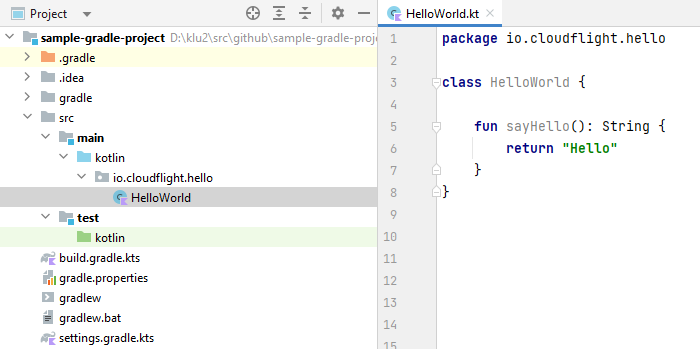
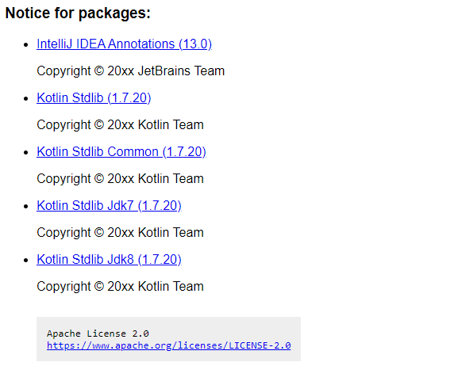

Convention over Configuration
Applying Spring Boot's AutoConfigure to Gradle, having the shortest build files possible
Spring Boot
Spring Boot makes it easy to create stand-alone, production-grade Spring based Applications that you can "just run".
"We take an opinionated view of the Spring platform and third-party libraries so you can get started with minimum fuss. Most Spring Boot applications need minimal Spring configuration."
Hello Web-World
Add a dependency to spring-boot-starter-web
dependencies {
implementation(
"org.springframework.boot:spring-boot-starter-web:2.7.3"
)
}
Hello Web-World
Create a main class
package io.cloudflight.hello
import org.springframework.boot.autoconfigure.SpringBootApplication
import org.springframework.boot.runApplication
@SpringBootApplication
class HelloWorldApplication
fun main(args: Array) {
runApplication(*args)
}
Hello Web-World
package io.cloudflight.hello
import org.springframework.web.bind.annotation.*
@RestController
class HelloWorldController {
@GetMapping("/")
fun sayHello() : Greeting {
return Greeting("Hello", "DevTreff")
}
data class Greeting(val greeting:String, val person:String)
}
Hello Web-World
Start the application and visit
GET http://localhost:8080/
Your browser will print
{"greeting":"Hello","person":"DevTreff"}
Convention over configuration
Without configuring any of those you got:
- An embedded Apache Tomcat Web Server running on port 8080
- Servlet mappings automatically configured with JSON response mappings
- Automatic mapping of Kotlin Data classes to JSON using Jackson
Gradle
Accelerate developer productivity
From mobile apps to microservices, from small startups to big enterprises, Gradle helps teams build, automate and deliver better software, faster.
Empty Java Gradle project
Create a build.gradle.kts file as follows:
plugins {
java
}
group = "io.cloudflight.gradle.sample"
version = "1.0-SNAPSHOT"
repositories {
mavenCentral()
}
Configure JUnit5
Because we love TDD!
tasks.test {
useJUnitPlatform()
}
Add Manifest.MF
Proper metadata in your JARs are important!
tasks.jar {
manifest {
attributes(
"Implementation-Title" to project.name,
"Implementation-Version" to project.version,
"Implementation-Vendor" to "Cloudflight",
)
}
} Encoding
Cause we don't wanna rely on system defaults:
tasks.compileJava {
options.encoding = "UTF-8"
}
tasks.compileTestJava {
options.encoding = "UTF-8"
} Add Sources and JavaDoc
We want our users to browse through our code
java {
withSourcesJar()
withJavadocJar()
} Switch to Java 17
java {
toolchain {
languageVersion.set(JavaLanguageVersion.of(17))
}
}
Add Kotlin
plugins {
kotlin("jvm") version "1.7.20"
kotlin("kapt") version "1.7.20"
}
kotlin {
jvmToolchain {
this.languageVersion.set(JavaLanguageVersion.of(17))
}
}
Full Example
plugins {
kotlin("jvm") version "1.7.20"
kotlin("kapt") version "1.7.20"
}
group = "io.cloudflight.gradle.sample"
version = "1.0-SNAPSHOT"
repositories {
mavenCentral()
}
tasks.compileJava {
options.encoding = "UTF-8"
}
tasks.compileTestJava {
options.encoding = "UTF-8"
}
tasks.jar {
manifest {
attributes(
"Implementation-Title" to project.name,
"Implementation-Version" to project.version,
"Implementation-Vendor" to "Cloudflight",
)
}
}
tasks.test {
useJUnitPlatform()
}
java {
toolchain {
languageVersion.set(JavaLanguageVersion.of(17))
}
withSourcesJar()
withJavadocJar()
}
kotlin {
jvmToolchain {
this.languageVersion.set(JavaLanguageVersion.of(17))
}
} Summary
- So we now have 47 lines of Gradle Kotlin DSL for a fully running Kotlin+Java example
- Is that too much or even a problem?
- Not if you're doing just one project.
- But it is, if you're running 100s of projects in parallel like we are doing at Cloudflight.
Problem #1
Suppose you have those 47 lines spread over 100 projects and want to introduce something new
- Update the version of the Kotlin Plugin
- Add a new value to the
Manifest.MF - Apply Jacoco in every Java project
Problem #1
Suppose you have those 47 lines spread over 100 projects and want to introduce something new
- Create more or less complicated changelogs
- More or less force the projects to apply those changelogs
- Hope that no-one did manual updates which make applying the changelog a pain
Problem #2
You want to ensure that best practices are applied in all of your projects
- Deviations from the standard must be done with good (documented) reason
- Don't make developers think too much about the standard, it should be just there and work
That's why we built the AutoConfigure Gradle Plugin
- Available on GitHub
- Licensed under Apache 2.0
- Published on the Gradle Plugin Portal


AutoConfigure Plugin

"This plugin is an opinionated approach to configure a Gradle project automatically by convention. It supports to automatically configure various plugins to reduce boilerplate code in Gradle projects."
Remember our 47 lines
plugins {
kotlin("jvm") version "1.7.20"
kotlin("kapt") version "1.7.20"
}
group = "io.cloudflight.gradle.sample"
version = "1.0-SNAPSHOT"
repositories {
mavenCentral()
}
tasks.compileJava {
options.encoding = "UTF-8"
}
tasks.compileTestJava {
options.encoding = "UTF-8"
}
tasks.jar {
manifest {
attributes(
"Implementation-Title" to project.name,
"Implementation-Version" to project.version,
"Implementation-Vendor" to "Cloudflight",
)
}
}
tasks.test {
useJUnitPlatform()
}
java {
toolchain {
languageVersion.set(JavaLanguageVersion.of(17))
}
withSourcesJar()
withJavadocJar()
}
kotlin {
jvmToolchain {
this.languageVersion.set(JavaLanguageVersion.of(17))
}
} Our workspace

Same with AutoConfigure
plugins {
id("io.cloudflight.autoconfigure-gradle") version "0.8.4"
}
group = "io.cloudflight.gradle.sample"
version = "1.0-SNAPSHOT"
autoConfigure {
java {
vendorName.set("Cloudflight")
}
}
repositories {
mavenCentral()
} And you get even more for free
Advanced Manifest
Adding entries for Class-Path and Created-By:
Class-Path: kotlin-stdlib-jdk8-1.7.20.jar kotlin-stdlib-jdk7-1.7.20.jar
kotlin-stdlib-1.7.20.jar kotlin-stdlib-common-1.7.20.jar annotations-13
.0.jar
Created-By: 17.0.2+8 (Eclipse Temurin)
Implementation-Vendor: Cloudflight
Implementation-Title: sample-gradle-project
Implementation-Version: 1.0-SNAPSHOT
Gradle-Version: 7.4.2
A NOTICE.html with all 3rd party libs

A Licence Report as JSON
{
"project": "IntelliJ IDEA Annotations",
"description": "A set of annotations used for code inspection support and code documentation.",
"version": "13.0",
"developers": [
"JetBrains Team"
],
"url": "http://www.jetbrains.org",
"year": "",
"licenses": [
{
"license": "Apache License 2.0",
"license_id": "Apache-2.0",
"license_url": "https://www.apache.org/licenses/LICENSE-2.0"
}
],
"dependency": "org.jetbrains:annotations:13.0"
}How does that work?
The magic keyword is "auto-configuration"
Java AutoConfigure
If we detect any of the folders
src/main/javasrc/test/java
then we
- apply the
java-libraryplugin - set the
jvmToolChainto latest Java LTS version (17) - set
encodingof all source files to UTF-8 - create a proper manifest
- apply the plugins for Jacoco and License-Tracking
Kotlin AutoConfigure
If we detect any of the folders
src/main/kotlinsrc/test/kotlin
then we
- apply the Java-AutoConfigure plugin from above
- apply the Kotlin Gradle plugins for JVM, KAPT and Spring
- set the
jvmToolChainfor Kotlin to the same Java version
Overriding defaults
Just like in Spring Boot, you sometimes might want to override the defaults, which you can always do by overriding the values of the original plugin
java {
toolchain {
languageVersion.set(JavaLanguageVersion.of(11))
}
} Your settings here won't be overridden by our plugin.
Overriding defaults
Especially for multi-module environments we provide an own configuration block for your
root build.gradle.kts which will override the defaults for all modules:
autoConfigure {
java {
languageVersion.set(JavaLanguageVersion.of(8))
encoding.set("UTF-16")
vendorName.set("My cool company")
}
kotlin {
kotlinVersion.set("1.5.31")
}
} What else do we provide?
Besides support for Java and Kotlin, the AutoConfigure plugin also provides sensible defaults for:
- Reporting-Extensions with Jacoco for code-coverage
- the Gradle-Node-Plugin, specifically when working with NPM
- support for Swagger + OpenAPI (generate specs from code and vice versa)
- support for Spring Boot + Micronaut for fat-JAR-packaging
Where to go next?
- Check our GitHub-Page and download the plugin
- Check out our real-life samples, one of them being a full-functional Spring Boot App written in Kotlin, providing an OpenAPI, including an Angular frontend.
- Give our project a star on GitHub
- Contribute, either by adding issues or by submitting pull requests.